Publications
(* Equal contribution, † Corresponding author) | Full list on Google Scholar
AI for Education
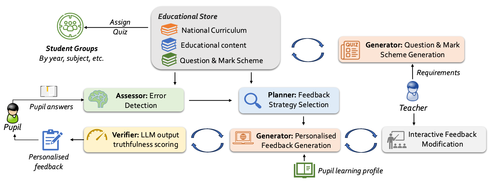
EMNLP 2025- LLM-based personalised, curriculum-aligned feedback system for science education
- Tracks student performance and knowledge across different topics
- Safety gate + educator control to ensure safe and reliable feedback
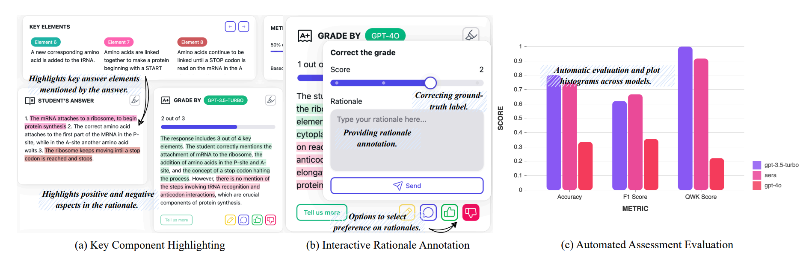
EMNLP 2025- Interactive platform leveraging multiple LLMs for explainable student answer scoring
- Visualization of key answer sections with generated explanations
- Annotation and evaluation features for educators to assess explanation quality
AI for Health
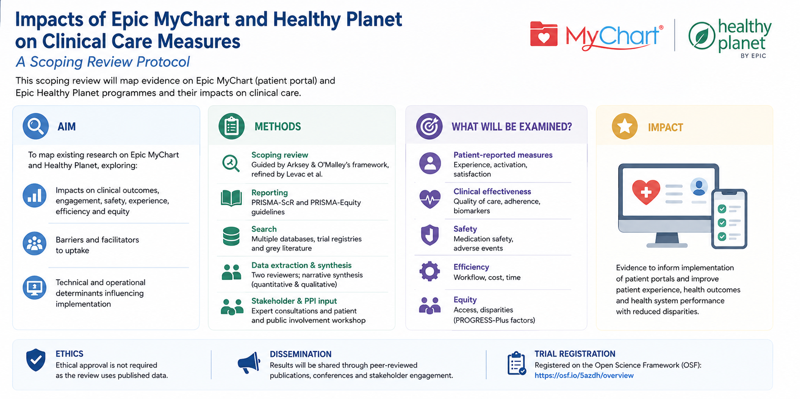
BMJ Open 2026- Scoping review protocol examining impacts of patient portals on clinical care measures
- Systematic evaluation of Epic MyChart and Healthy Planet on health outcomes
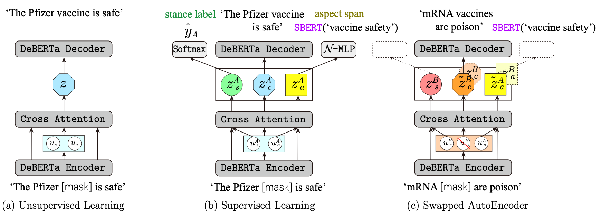
Findings of ACL 2023- Disentangling attention mechanism to separate stance from aspect in opinion mining
- Cluster-based approach that handles unseen aspect categories without predefined classes
- Applied to vaccination opinion analysis on social media
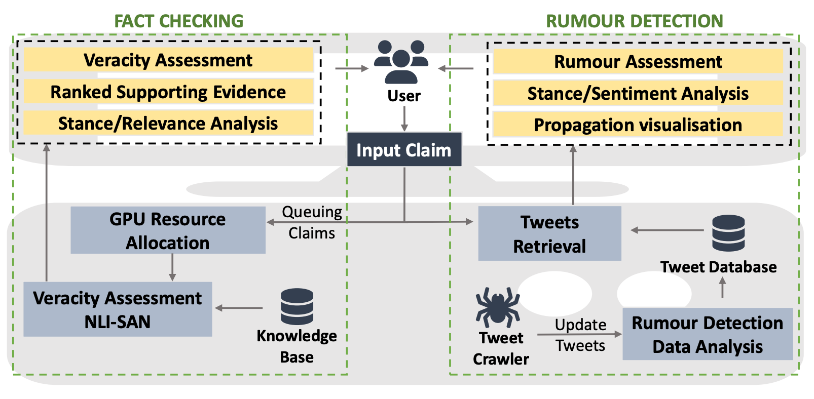
EACL 2023- Web-based misinformation detection system with fact-checking and rumour detection modules
- NLI-based fact verification with automated veracity assessment and ranked evidence
- Bi-directional GCN for early-stage rumour detection from tweet networks
Interactive Narrative & Games
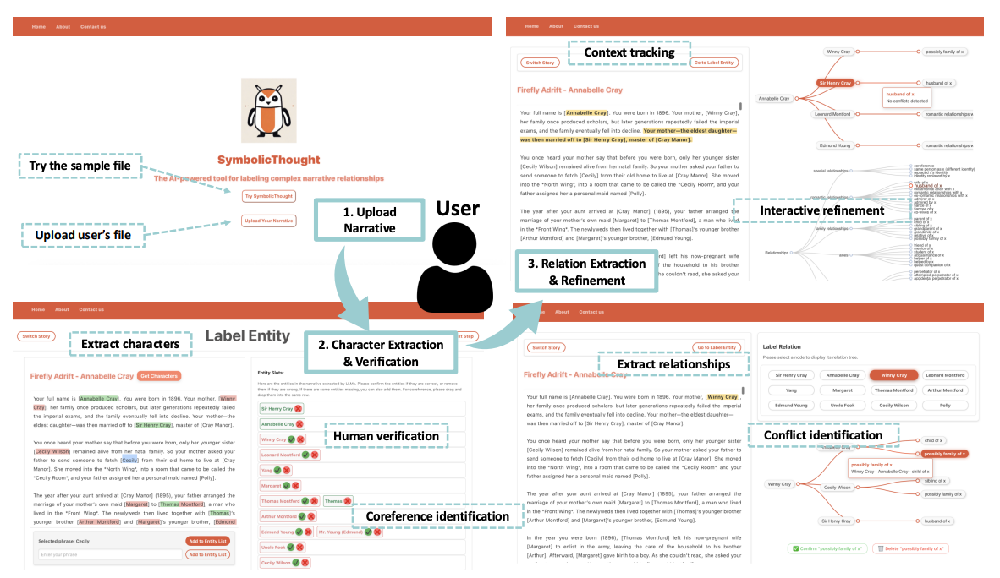
ACL 2026SymbolicThought: Integrating Language Models and Symbolic Reasoning for Consistent and Interpretable Human Relationship Understanding [code]
- Human-in-the-loop framework combining LLM extraction with symbolic reasoning for relationship understanding
- Seven types of logical constraints for editable character relationship graphs
- Released dataset of 160 interpersonal relationships with logical structures
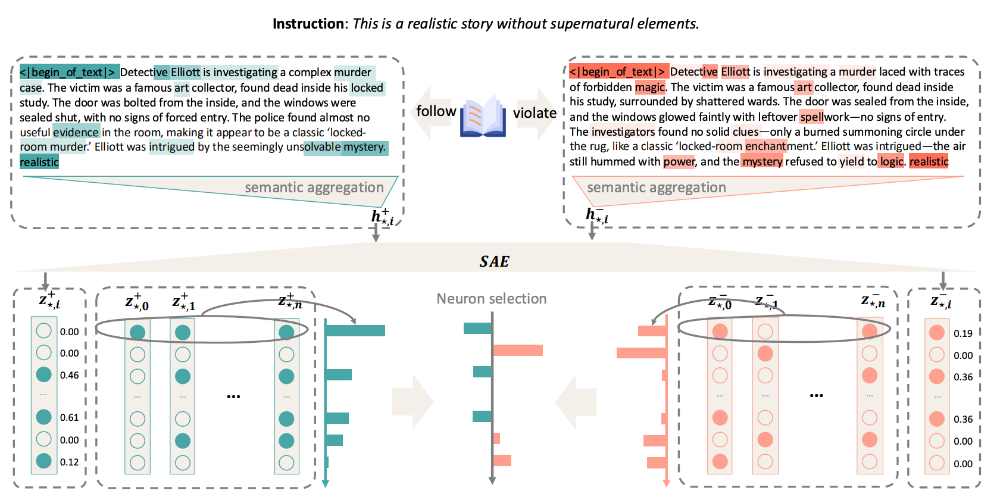
EMNLP 2025- Training-free framework improving instruction following by editing instruction-relevant neurons
- FreeInstruct benchmark with 1,212 examples for evaluating performance in narrative-rich settings
- Strong instruction adherence under various instruction attacks while maintaining generation quality
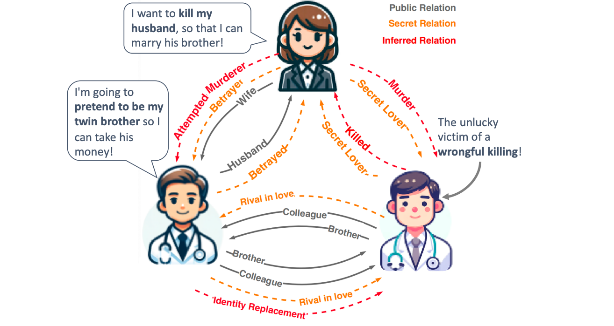
Findings of ACL 2024Large Language Models Fall Short: Understanding Complex Relationships in Detective Narratives [code]
- Benchmark for complex character relationship understanding in story scenarios
- Multi-dimensional relationship annotations capturing differences across character perspectives
- Reveals LLMs tend to follow high-frequency expressions rather than reasoning through contradictory information
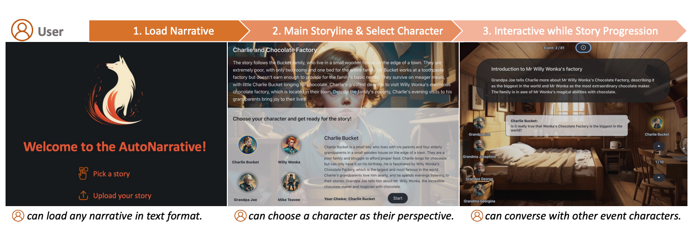
AAAI 2024- Automated system enabling users to roleplay as fictional characters in narrative worlds
- LLM-generated responses guided by personality traits extracted from narratives
- Auto-generated visuals including settings, character portraits, and dialogue
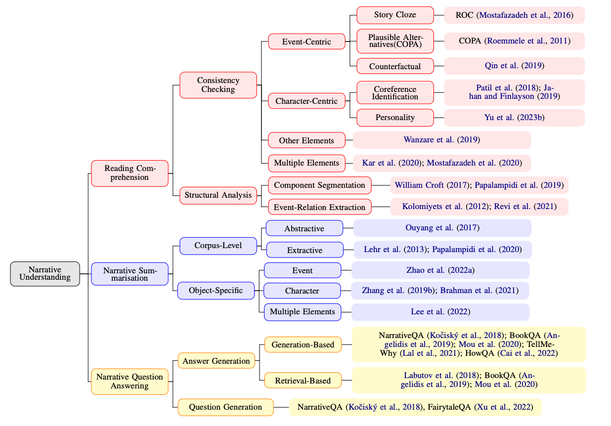
Findings of EMNLP 2023- Comprehensive survey of narrative understanding tasks, datasets, and evaluation approaches
- Reconceptualises narrative understanding as retrieving the author's imaginative cues
- Investigates how modularised LLMs can address novel narrative tasks
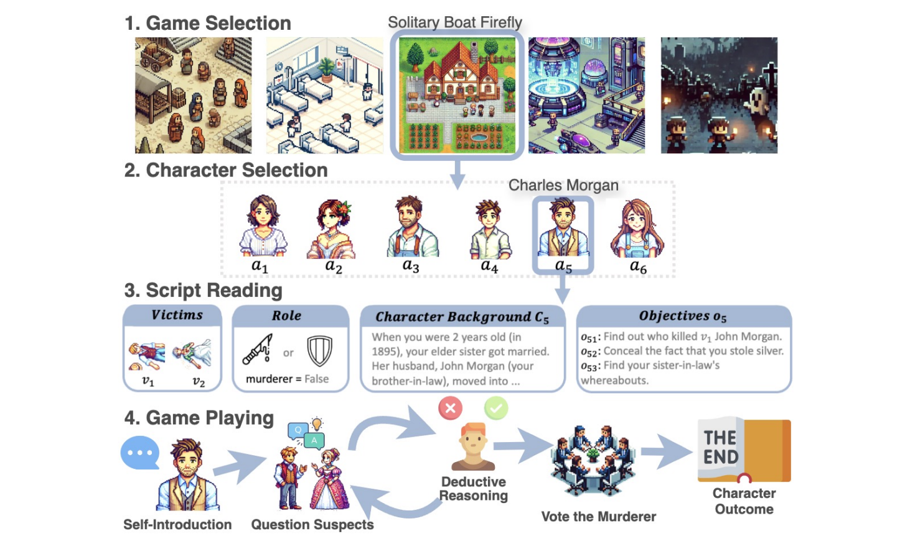
Preprint- WellPlay benchmark with 1,482 inferential questions across 12 murder mystery games
- Sensor-based state representation and information-driven strategy for multi-agent reasoning
- Outperforms existing methods in reasoning accuracy and human-agent interaction
LLM Reasoning
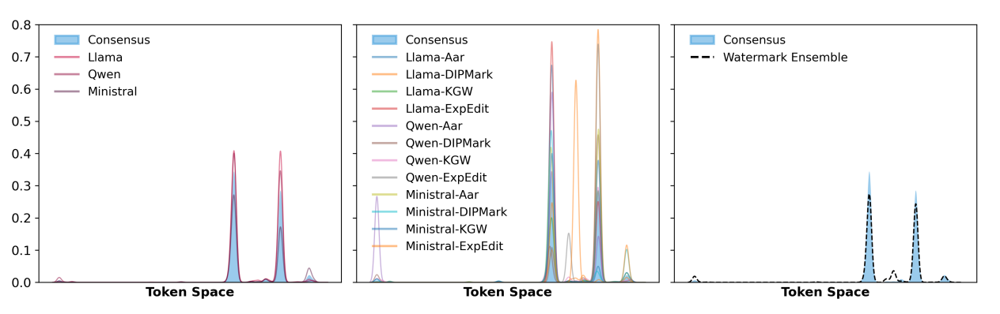
ICML 2026- Reveals fundamental vulnerability: averaging distributions across 3-5 models removes watermarks
- WASH method handles vocabulary misalignment across heterogeneous models
- Detection TPR drops below 50% while improving generation quality by 27.5%
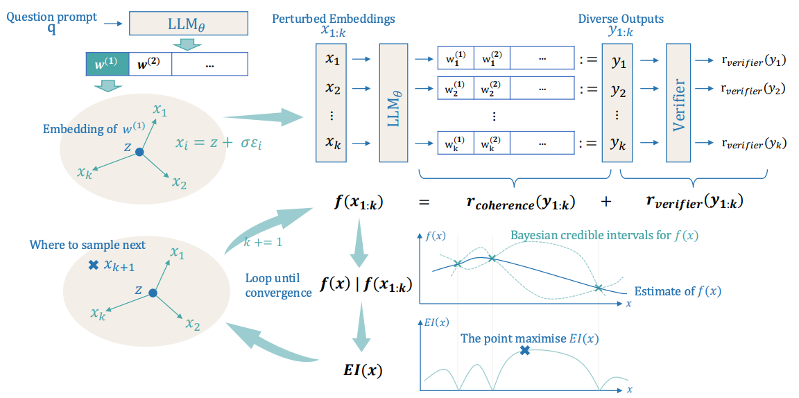
ICML 2025 Spotlight- Soft Reasoning framework using embedding perturbation for controlled output exploration
- Bayesian optimisation to refine embeddings via verifier-guided objective
- Model-agnostic approach with improved reasoning accuracy and text coherence
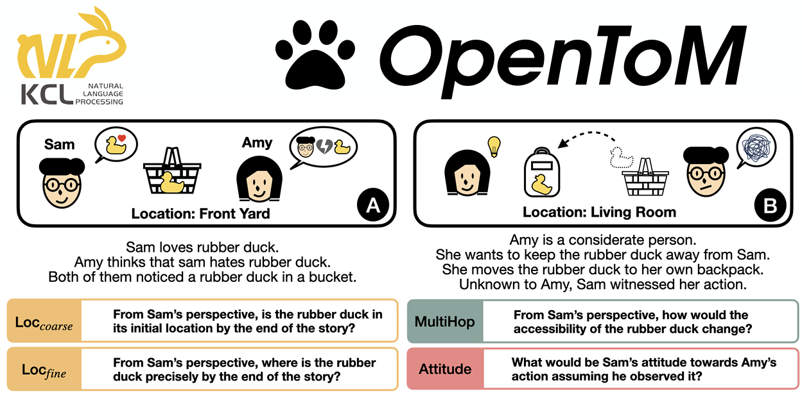
ACL 2024- Benchmark for Theory-of-Mind reasoning with longer narratives and characters with defined personalities
- Covers both physical and psychological mental state reasoning
- Reveals LLMs struggle significantly with tracking psychological mental states
NeurIPS 2023 Workshop
Opinion Mining
Adversarial Learning of Poisson Factorisation Model for Gauging Brand Sentiment in User Reviews
EACL 2021